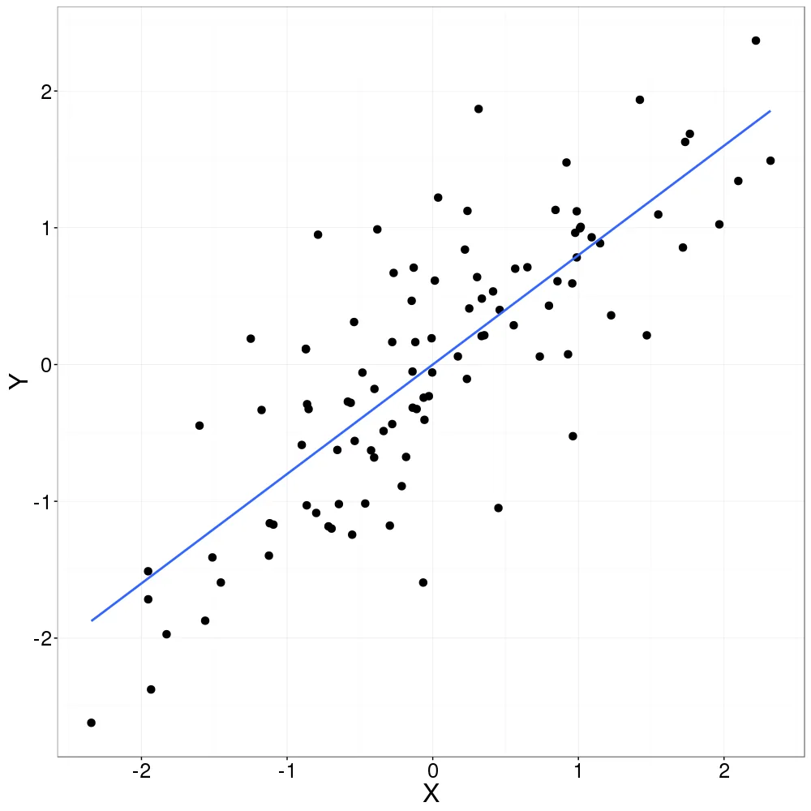

SAÉ 2.03 · Semestre 2 · individuel
Ce qu’une droite de régression ne dit pas
Régression linéaire sous R sur des caractéristiques de véhicules, et une leçon sur les valeurs aberrantes et l’analyse des résidus.

Le problème
Comment mettre en évidence une liaison entre deux variables, ajuster un modèle linéaire et en comprendre les limites sur des données réelles imparfaites ?
Contexte
Caractéristiques techniques de véhicules (poids, puissance, cylindrée) et capacités réelles (consommation, vitesse, accélération).
La démarche
Explorer
Matrices de corrélation et nuages de points pour repérer les paires de variables à tendance linéaire.
Ajuster
Régression par moindres carrés avec la fonction lm() de R.
Prédire et vérifier
Prédiction sur un nouveau véhicule et analyse des résidus.
Livrables
- Analyse sous R
Limites
- Variables explicatives mal choisies et valeurs extrêmes non traitées : la droite était tirée par quelques véhicules atypiques.
- Coefficient R² surinterprété : la répartition des résidus montrait que le modèle linéaire n’était pas adapté.
Ce que j’en retiens
Un modèle applique aveuglément ce qu’on lui donne. Décrire chaque variable et traiter les valeurs extrêmes avant d’ajuster : c’est une erreur que je ne refais plus.
Pour les enseignants : SAÉ 2.03, compétences et apprentissages critiques
Régression sur données réelles · semestre 2 · 10 h
Compétences mobilisées
Apprentissages critiques
AC12.03Saisir l’intérêt des synthèses numériques et graphiques pour décrire une variableAC12.04Comprendre l’intérêt des synthèses pour mettre en évidence des liaisons entre variables
Ressources mobilisées
- R2.04 Programmation statistique
- R2.05 Statistique descriptive 2
- R2.12 PPP 2